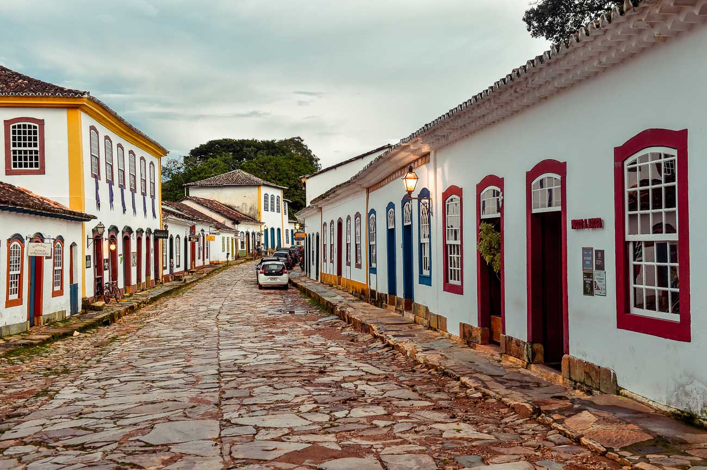
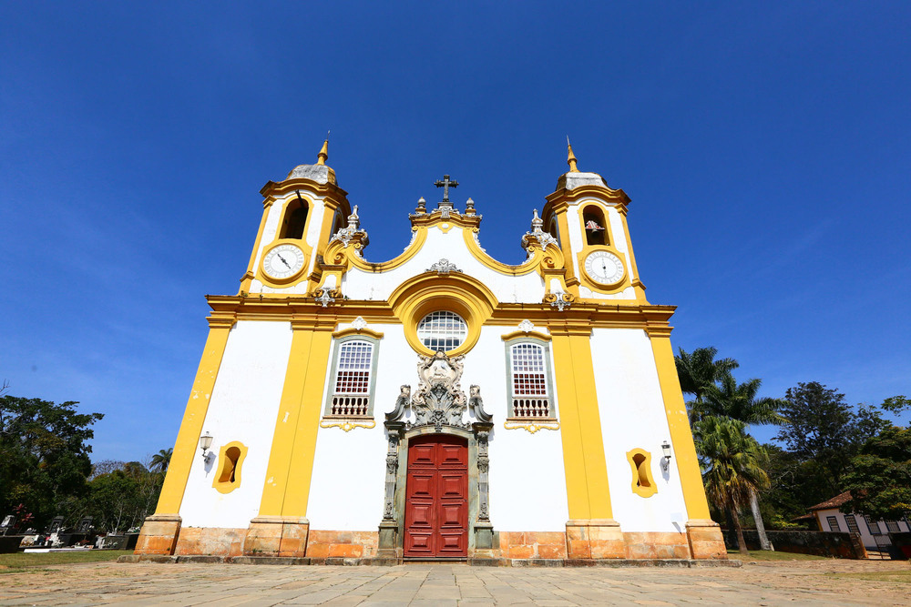
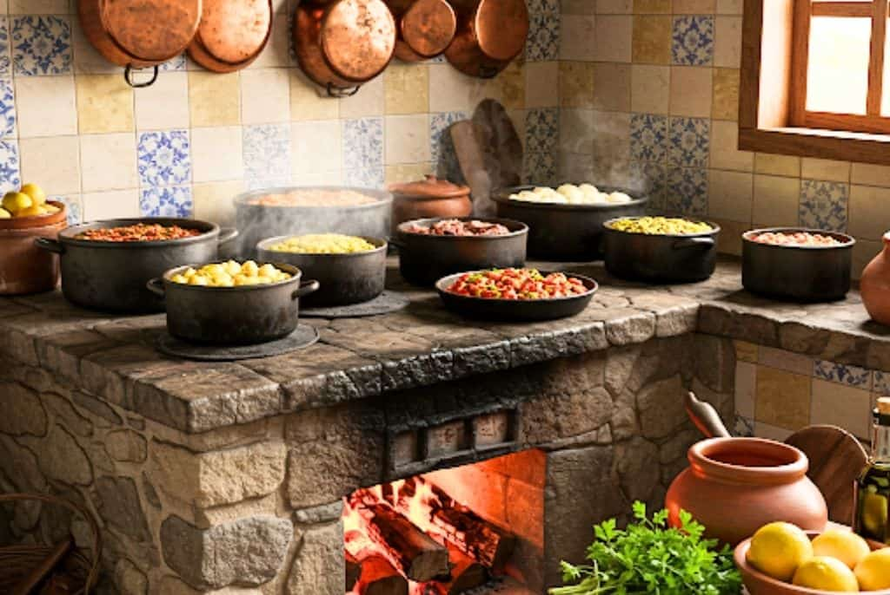

Igreja Matriz de Santo Antônio
Uma das igrejas barrocas mais famosas de Minas Gerais, conhecida pela riqueza de detalhes e decoração em ouro.
Charme colonial, gastronomia mineira e cultura histórica
Tiradentes é uma das cidades históricas mais encantadoras de Minas Gerais. Conhecida pelo seu charme colonial, ruas de pedra, casarões antigos e atmosfera tranquila, a cidade atrai turistas durante todo o ano.
Além da beleza histórica, Tiradentes se destaca pela excelente gastronomia mineira, festivais culturais e pousadas aconchegantes, sendo considerada um dos destinos turísticos mais sofisticados do estado.

A cidade recebeu esse nome em homenagem a Joaquim José da Silva Xavier, o Tiradentes, importante personagem da Inconfidência Mineira.
Tiradentes preserva até hoje sua arquitetura colonial, igrejas barrocas e tradições culturais que fazem parte da história de Minas Gerais.
Tiradentes é considerada uma das cidades históricas mais bem preservadas do Brasil e um dos destinos mais românticos de Minas Gerais.

Uma das igrejas barrocas mais famosas de Minas Gerais, conhecida pela riqueza de detalhes e decoração em ouro.
Principal praça da cidade, cercada por restaurantes, lojas, bares e casarões históricos.
Passeio turístico de trem que liga Tiradentes a São João del-Rei, proporcionando uma experiência histórica e cultural.
Ótimo local para trilhas, cachoeiras e contato com a natureza.
Monumento histórico construído no período colonial e um dos cartões-postais da cidade.
Tiradentes é referência nacional em gastronomia e reúne diversos restaurantes especializados em culinária mineira e cozinha contemporânea.
O Festival Cultura e Gastronomia de Tiradentes é um dos eventos gastronômicos mais famosos do Brasil.

A cidade possui intensa programação cultural com festivais, apresentações artísticas, música ao vivo, feiras e eventos históricos.
| Evento | Destaque |
|---|---|
| Festival Gastronômico | Culinária mineira e chefs renomados |
| Mostra de Cinema | Festival cultural e audiovisual |
| Semana Santa | Tradições religiosas históricas |
| Eventos musicais | Shows e apresentações culturais |
O artesanato local valoriza produtos típicos mineiros, decoração, arte colonial e lembranças históricas.
| Informação | Detalhe |
|---|---|
| Estado | Minas Gerais |
| Tipo de turismo | Histórico, gastronômico e cultural |
| Principal destaque | Centro histórico colonial |
| Melhor experiência | Gastronomia e passeios históricos |
“Tiradentes encanta visitantes com seu charme colonial, gastronomia mineira e atmosfera histórica única.”